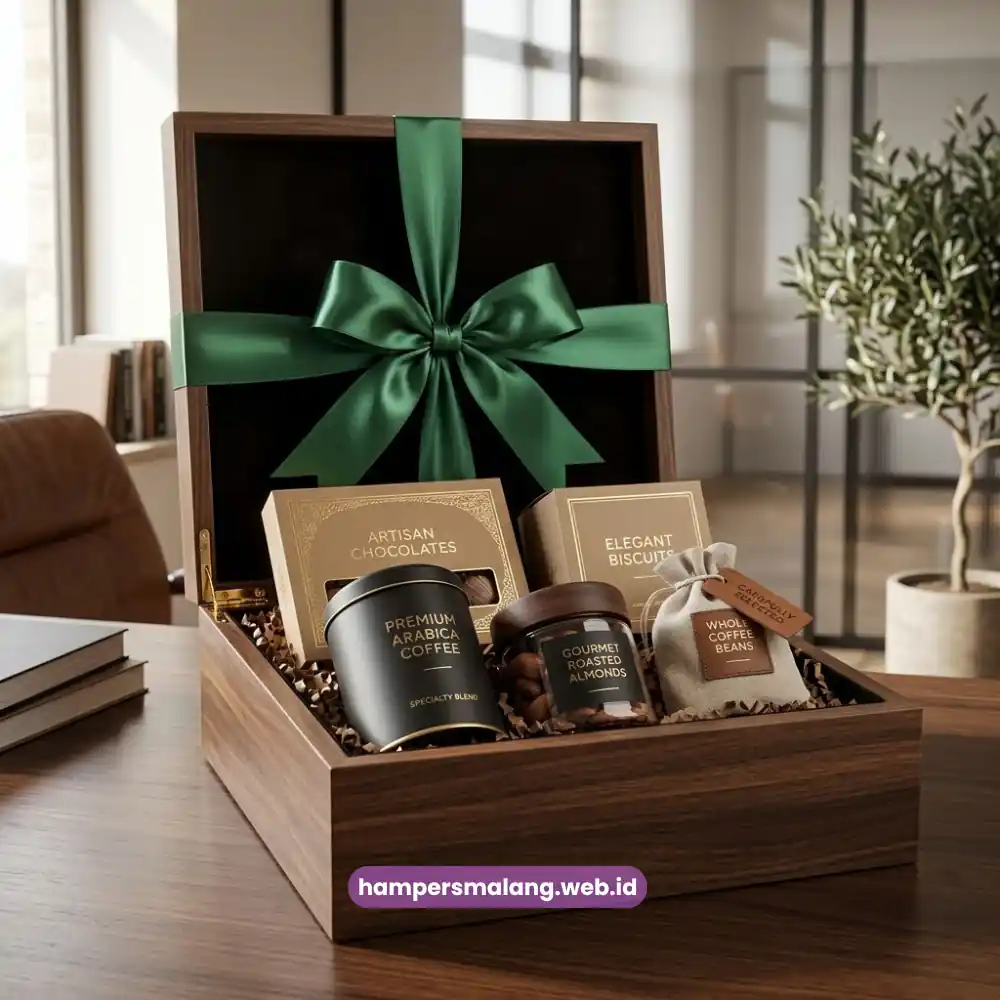
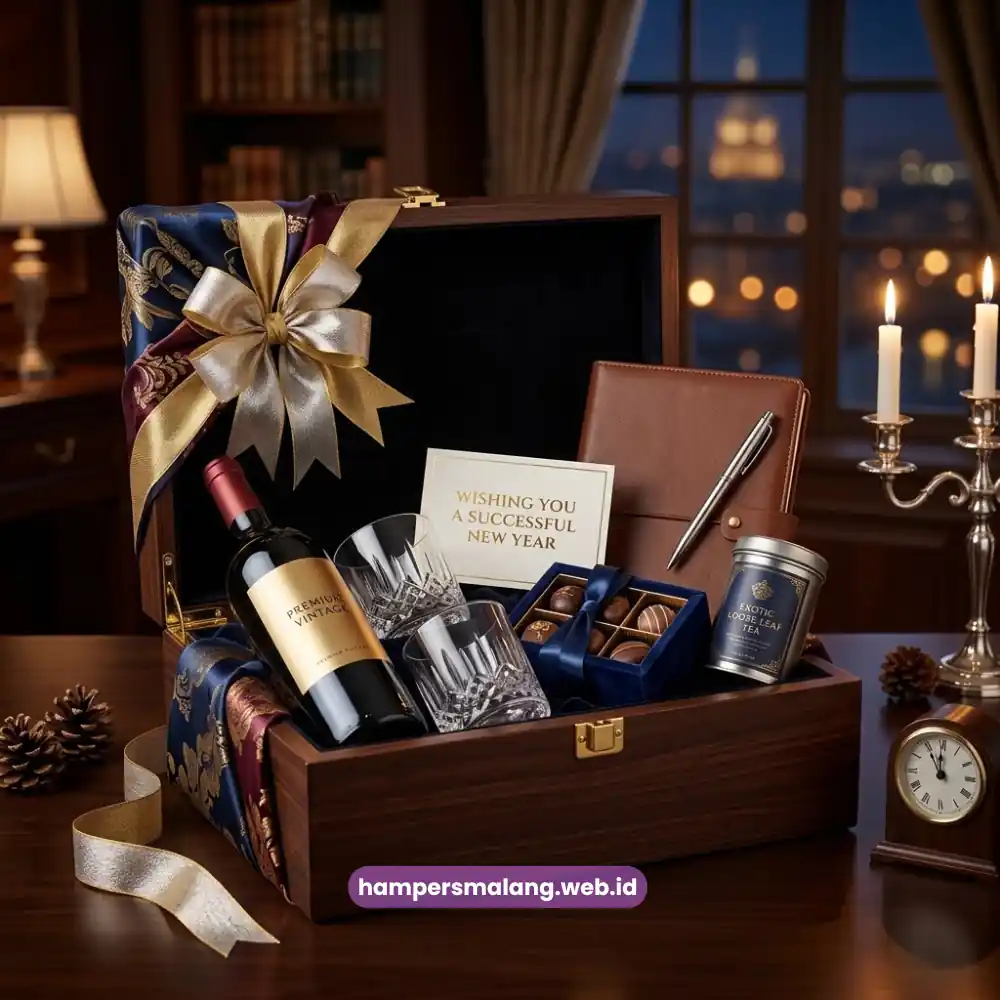

Waktu terbaik memberikan hampers untuk relasi bisnis adalah saat momen tersebut memiliki makna khusus bagi hubungan kedua belah pihak, seperti akhir tahun, pasca-kerja sama strategis, atau hari besar.
Ketepatan waktu ini menentukan apakah hampers dipersepsikan sebagai bentuk apresiasi tulus atau sekadar formalitas rutin.
Perusahaan yang cermat memilih momen pengiriman umumnya memperoleh dampak hubungan jangka panjang yang lebih kuat dibandingkan pengiriman tanpa konteks yang jelas.
- Momen pengiriman menentukan makna dan dampak hampers terhadap hubungan bisnis.
- Akhir tahun dan hari raya adalah waktu paling umum untuk pengiriman hampers korporat.
- Pasca pencapaian kerja sama besar menjadi momen strategis yang sering terlewatkan.
- Ulang tahun perusahaan mitra dapat memperkuat kedekatan personal dalam hubungan formal.
- Hampers Malang siap membantu perusahaan menentukan waktu dan konsep pengiriman yang tepat.
Mengapa Waktu Pengiriman Hampers Memengaruhi Kesan Bisnis?
Waktu pengiriman memengaruhi kesan bisnis karena hampers yang datang pada momen yang tepat langsung terhubung dengan konteks yang sedang dialami penerima.
Sebaliknya, hampers yang dikirim tanpa kaitan momen tertentu cenderung dianggap sebagai rutinitas administratif belaka.
Sebuah hampers yang tiba tepat setelah penandatanganan kontrak besar, misalnya, akan langsung diasosiasikan dengan rasa syukur dan penghargaan atas kerja sama yang baru terjalin.
Persepsi ini jauh lebih kuat dibandingkan bila hampers yang sama dikirim beberapa bulan kemudian tanpa alasan yang jelas.
Oleh sebab itu, banyak perusahaan mulai menyusun kalender relasi bisnis untuk memastikan setiap momen penting tidak terlewat.
Baca Juga: 9 Ide Hampers Relasi Bisnis yang Elegan dan Profesional
Bagaimana Menentukan Prioritas Momen Pengiriman?
Menentukan prioritas momen dapat dilakukan dengan memetakan siklus hubungan bisnis, mulai dari awal kerja sama, evaluasi tahunan, hingga perayaan pencapaian bersama.
Perusahaan yang memiliki banyak mitra strategis sebaiknya membuat daftar momen penting per klien agar pengiriman hampers tidak tumpang tindih dan tetap terasa personal.
Momen Akhir Tahun sebagai Waktu Paling Umum
Akhir tahun merupakan momen yang paling sering dipilih perusahaan untuk mengirimkan hampers kepada relasi bisnisnya.
Selain menandai pergantian tahun fiskal, periode ini juga identik dengan suasana refleksi dan harapan baru, sehingga hampers yang dikirim terasa selaras dengan semangat musim tersebut.
Pada momen ini, banyak perusahaan mengalokasikan anggaran khusus untuk hampers korporat sebagai bagian dari penutupan tahun kerja.
Pengiriman yang dilakukan lebih awal, sebelum periode libur panjang dimulai, umumnya lebih efektif karena hampers dapat diterima dan dinikmati penerima dengan suasana yang lebih santai.

Momen Pasca Pencapaian Kerja Sama Strategis
Pengiriman hampers segera setelah tercapainya kesepakatan penting, seperti penandatanganan kontrak jangka panjang atau kelahiran proyek bersama, memberikan dampak emosional yang kuat.
Momen ini menandakan bahwa perusahaan tidak hanya berorientasi pada hasil transaksi, tetapi juga menghargai proses kerja sama yang telah terbangun.
Ketepatan waktu di sini menjadi krusial.
Hampers yang dikirim terlalu lama setelah pencapaian tersebut berisiko kehilangan relevansi emosionalnya, sehingga sebaiknya proses pengiriman direncanakan bersamaan dengan tahap finalisasi kerja sama.
Ulang Tahun Perusahaan Mitra dan Hari Besar Keagamaan
Mengirimkan hampers pada ulang tahun perusahaan mitra menunjukkan bahwa hubungan yang dijalin bersifat personal, bukan sekadar transaksional.
Detail sekecil ini sering kali memberikan kesan mendalam karena menandakan perhatian perusahaan terhadap identitas dan sejarah mitranya.
Selain itu, hari besar keagamaan seperti Idulfitri atau Natal juga menjadi momen populer untuk pengiriman hampers.
Mengingat suasana tersebut identik dengan tradisi saling berbagi dan mempererat silaturahmi antarpihak, termasuk dalam konteks profesional.
Apa Dampak Ketepatan Waktu terhadap Loyalitas Mitra?
Ketepatan waktu pengiriman hampers berdampak langsung pada persepsi mitra terhadap keseriusan dan perhatian perusahaan dalam menjaga hubungan.
Mitra yang merasa diperhatikan pada momen yang tepat cenderung lebih terbuka dalam komunikasi bisnis selanjutnya, termasuk dalam hal negosiasi maupun perpanjangan kerja sama.
Sebaliknya, pengiriman yang asal-asalan tanpa memperhatikan konteks waktu berisiko menimbulkan kesan bahwa hampers hanya sekadar formalitas tahunan tanpa makna mendalam.
Menentukan waktu yang tepat adalah kunci agar hampers relasi bisnis benar-benar memberikan dampak positif bagi hubungan perusahaan dengan mitranya.
Baik momen akhir tahun, pasca pencapaian kerja sama, maupun ulang tahun perusahaan mitra, setiap momen memiliki nilai strategisnya masing-masing.
Tanya Jawab Seputar Waktu Pengiriman Hampers Relasi Bisnis
Tidak harus. Akhir tahun memang momen populer, namun momen lain seperti pasca-kerja sama strategis atau ulang tahun perusahaan mitra juga sama pentingnya untuk dipertimbangkan.
Sebaiknya perusahaan menyusun kalender relasi bisnis internal agar setiap momen penting per mitra dapat terpantau dan pengiriman hampers dapat direncanakan lebih matang.
Pengiriman yang terlambat dari momen yang seharusnya cenderung mengurangi dampak emosional hampers, sehingga ketepatan waktu tetap menjadi faktor penting untuk diperhatikan.

Butuh Hampers Perusahaan?
Solusi Hampers & Corporate Gift Kreatif di Jawa Timur.
Ditulis oleh Tim Maroon Souvenir
Sahabat mahasiswa dan pelaku bisnis di Malang Raya. Berpengalaman menangani merchandise event kampus, instansi pemerintahan, dan hotel berbintang di Batu.